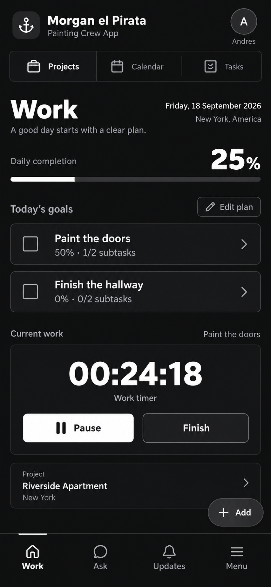

Design direction

Implemented Work screen

Source direction and actual local app. Both normalized to 390px wide. Source depicts a running timer; the implemented screenshot shows an idle timer with real disposable test records. No mock data was added to production.
